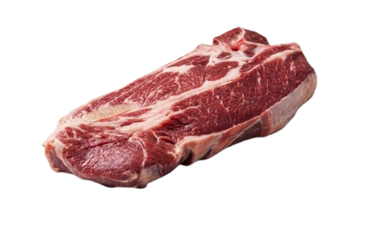

Acém
🔥 Mais usado em panela
💰 Ótimo custo-benefício
🥘 Cozimento lento
O acém é um corte bovino extremamente versátil, conhecido pelo sabor marcante, ótimo rendimento e excelente custo-benefício. Muito utilizado em receitas de panela, ensopados e cozimentos longos, o corte absorve bem os temperos e entrega uma carne macia após preparo lento.
Maciez
ModeradaGordura
BaixaSabor
Intenso
⭐ 4.8
Mais recomendado
Melhor custo-benefício para receitas de panela, perfeito para refeições do dia a dia.
Ideal para:
👨🍳 Dica do Açougueiro IA
Para deixar o acém ainda mais macio, cozinhe em fogo baixo por mais tempo. O corte absorve muito bem temperos e molhos.